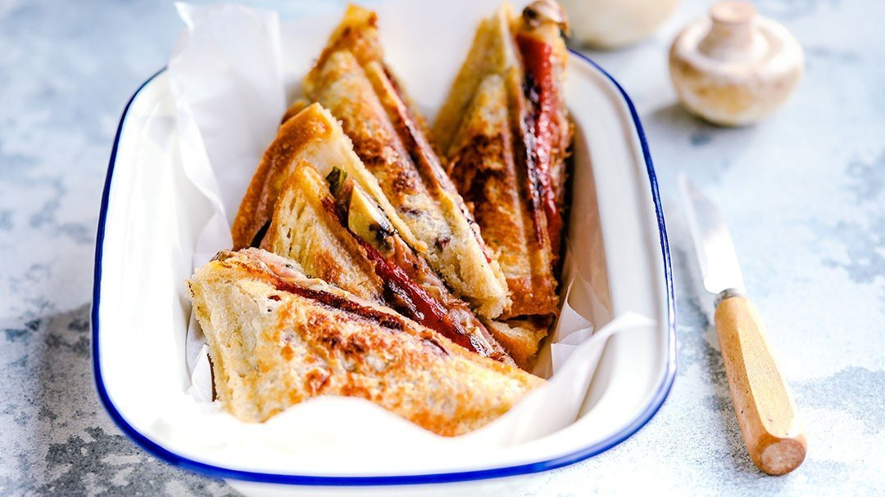

Serrano Jaffle

Description
This is a serrano jaffle. It is totally delicious and you'll totally love it.
Ingredients
- 2 pieces bread
- 4 slices serrano
- 3 slices cheese (cheddar is best)
- Generous pinch of spring onion
- Pinch of smoke paprika
- Butter to spread
Method
- Butter the bread, one side each slice.
- Pop one of the slices butter-down into your jaffle maker or jaffle iron.
- Load it up with your serrano, cheese, spring onion and paprika.
- Toast it in the jaffle iron/jaffle machine for approx. 3 minutes.
- Serve and enjoy!